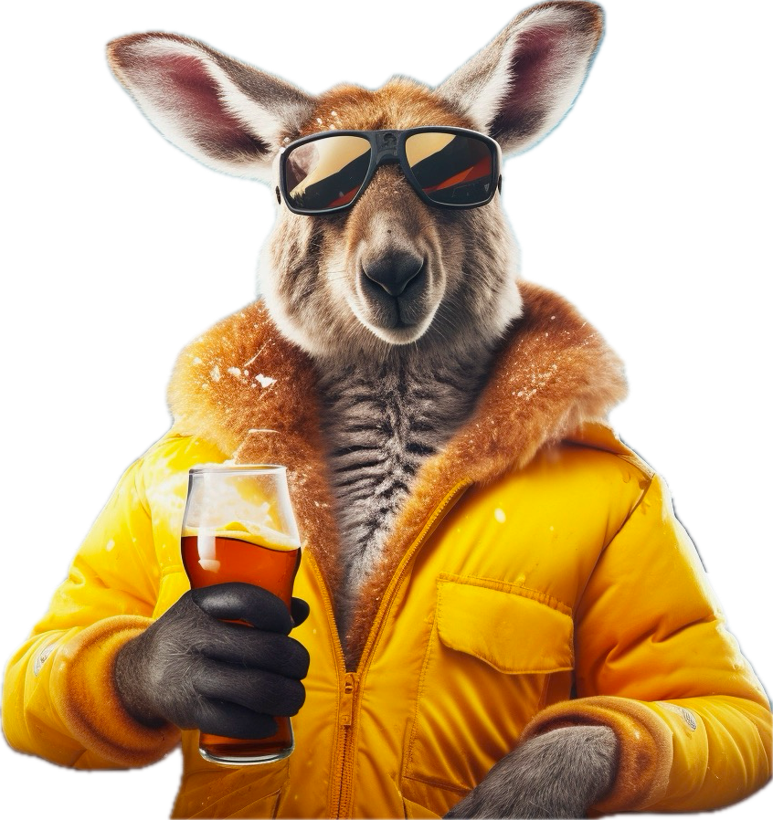
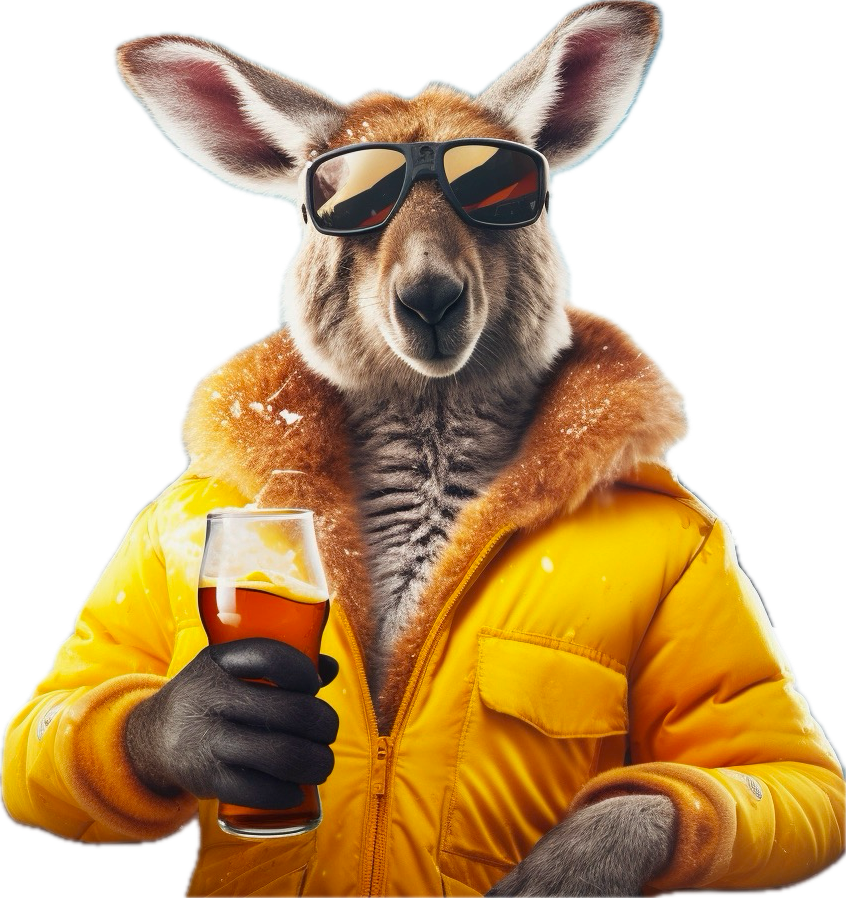
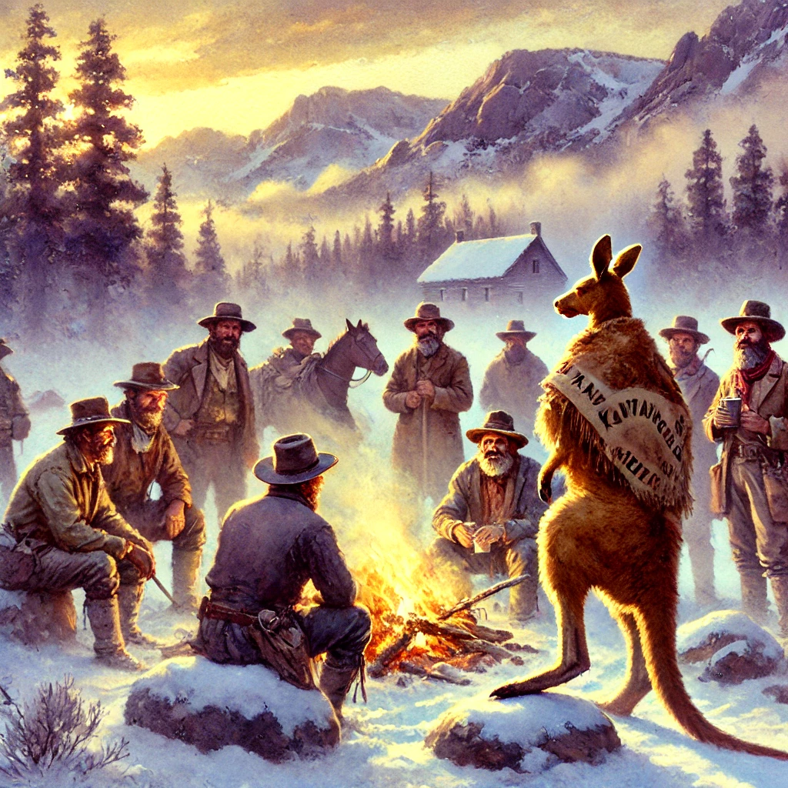
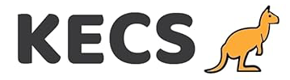

The History of Kegaroo
Palisade's Sunrise Keg Party
Kegaroo traces its origins back to the late 1800s, during the bustling days of the California Gold Rush. Among the many fortune seekers who flocked to the Sierra Nevada mountains were a group of Australian miners, drawn not only by the promise of gold but also by a sense of adventure and camaraderie. These miners brought with them a strong sense of tradition, including a peculiar custom from their homeland: a taxidermy kangaroo, which they believed brought good luck.
As the harsh winter of 1868 set in, the miners found themselves snowed in near what is now Palisades Ski Resort in Tahoe. With gold scarce and spirits low, they decided to revive their spirits by hosting a midwinter celebration. The stuffed kangaroo became the centerpiece of this gathering, symbolizing resilience and good fortune in the face of adversity. The miners brewed ale from what little supplies they had, gathered at dawn, and danced with the kangaroo to toast to their survival and solidarity.
This gathering became an annual tradition for the miners and eventually grew in popularity. As word spread, it attracted locals from nearby settlements who were eager to join in the unique celebration. The tradition evolved, with participants crafting their own kangaroo-inspired outfits and bringing their own brews to share.
The tradition might have faded into obscurity were it not for its rediscovery in the mid-20th century by a group of local skiers and history enthusiasts. Intrigued by the tale of the miners' winter celebration, they decided to revive the tradition at Palisades Ski Resort. The first modern Kegaroo, held in the winter of 1965, was a small affair, but it quickly gained traction as word spread through the local community.
Today, Kegaroo is a beloved annual event that brings people together at sunrise to celebrate in the same spirit of camaraderie and resilience that defined those early miners. With music, drinks, and kangaroo onesies as a nod to the past, Kegaroo honors its quirky origins while continuing to create new memories each year.
Thank You to Our Sponsors
-
